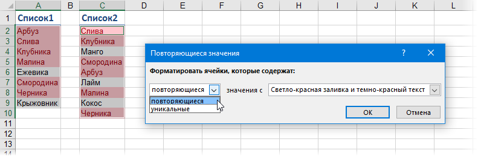

Вариант 2. Перемешанные списки
Если списки разного размера и не отсортированы (элементы идут в разном порядке), то придется идти другим путем.
Самое простое и быстрое решение: включить цветовое выделение отличий, используя условное форматирование. Выделите оба диапазона с данными и выберите на вкладке Главная - Условное форматирование - Правила выделения ячеек - Повторяющиеся значения (Home - Conditional formatting - Highlight cell rules - Duplicate Values):

Если выбрать опцию Повторяющиеся, то Excel выделит цветом совпадения в наших списках, если опцию Уникальные - различия.
Цветовое выделение, однако, не всегда удобно, особенно для больших таблиц. Также, если внутри самих списков элементы могут повторяться, то этот способ не подойдет.
В качестве альтернативы можно использовать функцию СЧЁТЕСЛИ (COUNTIF) из категории Статистические, которая подсчитывает сколько раз каждый элемент из второго списка встречался в первом: